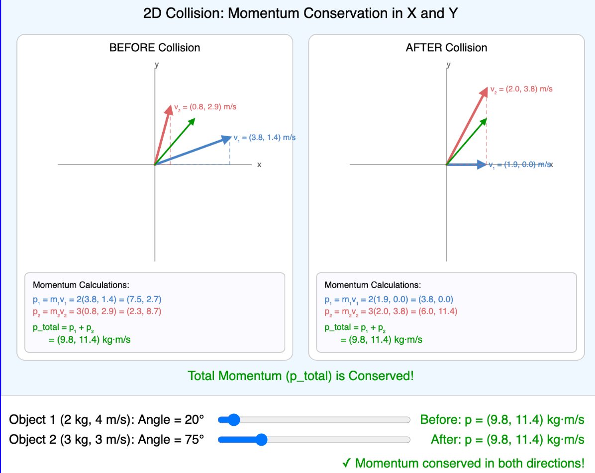
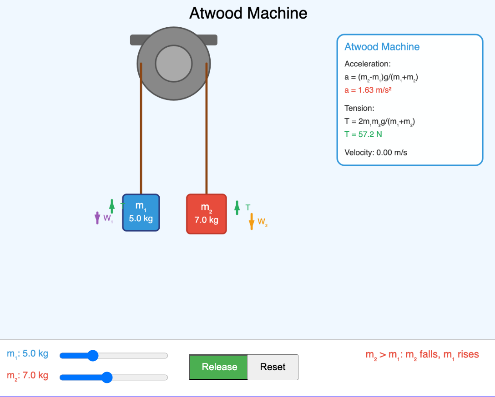
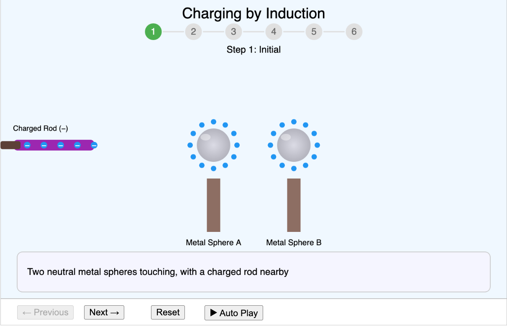
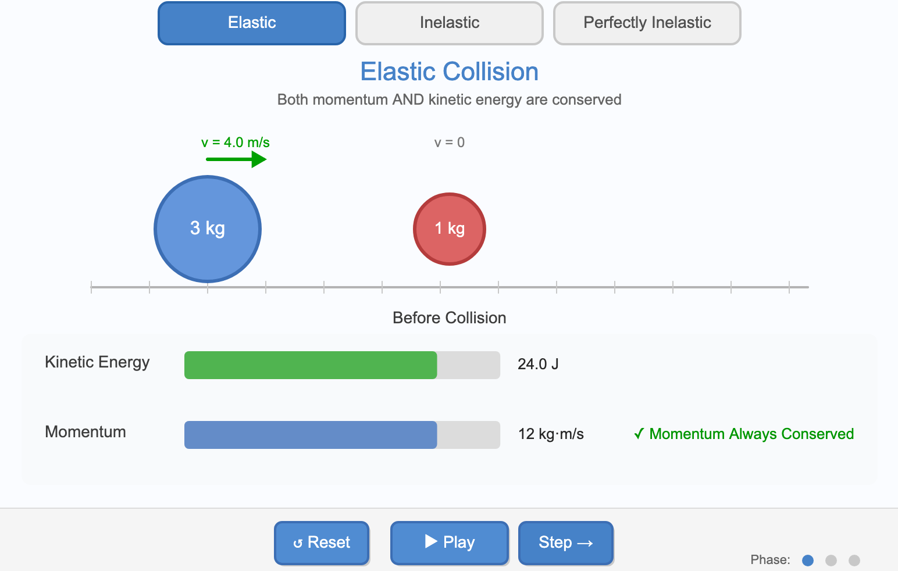
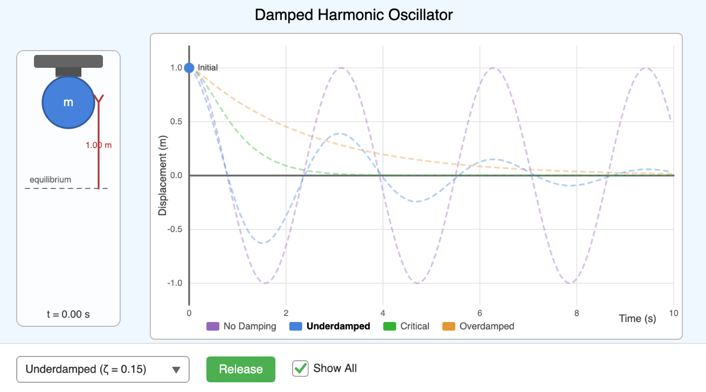
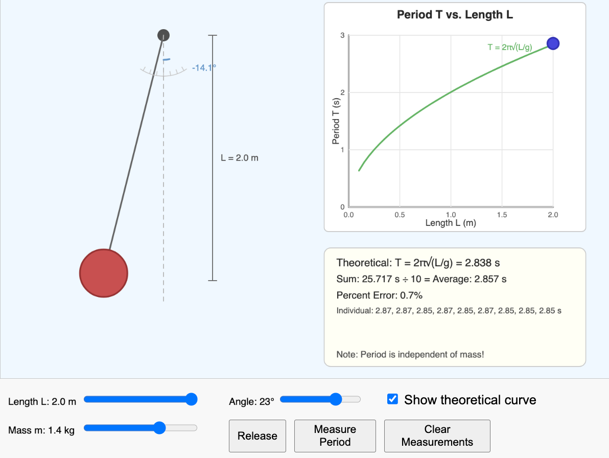
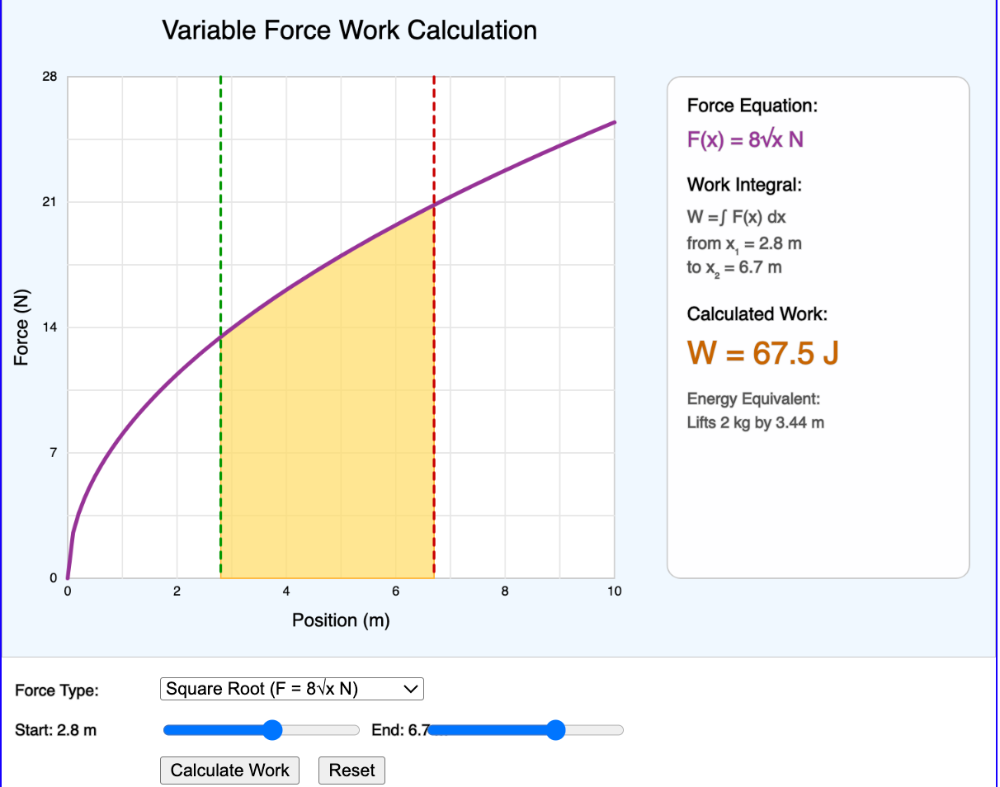

Physics MicroSims
This section contains interactive MicroSims covering topics in high school physics including kinematics, dynamics, energy, momentum, rotational motion, oscillations, waves, and electricity. Each simulation allows students to explore physics concepts through hands-on experimentation and visualization.
-
 Interactive visualization showing momentum vector conservation in two dimensions before and after collision.
-
Interactive demonstration of Newton's Third Law through six real-world scenarios showing action-reaction force pairs.
-
 Interactive simulation exploring how launch angle and speed affect projectile trajectory, range, and maximum height.
Interactive simulation exploring how launch angle and speed affect projectile trajectory, range, and maximum height. -
Interactive visualization showing how the angle of an applied force affects its horizontal and vertical components.
-
Angular Displacement Visualization
 An interactive MicroSim demonstrating angular displacement with a rotating disk showing how different points at various radii travel different arc lengths.
An interactive MicroSim demonstrating angular displacement with a rotating disk showing how different points at various radii travel different arc lengths. -
Angular Momentum Vector Visualization
 Visualize angular momentum as a vector quantity showing the right-hand rule for determining direction.
Visualize angular momentum as a vector quantity showing the right-hand rule for determining direction. -
Comparative Angular Velocities Chart
An interactive horizontal bar chart comparing angular velocities of common rotating objects on a logarithmic scale.
-
Atwood Machine Free-Body Diagram
 Interactive visualization of free-body diagrams for the Atwood machine showing how to set up and solve the equations.
Interactive visualization of free-body diagrams for the Atwood machine showing how to set up and solve the equations. -
 Interactive simulation of the classic Atwood machine with adjustable masses.
-
Interactive force analysis diagram for a vehicle on a banked curve showing how the normal force provides centripetal force.
-
Interactive exploration of how vehicle speed relative to ideal speed determines friction requirements on banked curves.
-
Overview of 11 major branches of physics and their subbranches as an interactive dependency graph visualization.
-
Capacitor Charging and Discharging
Interactive simulation showing how capacitors store and release energy in RC circuits with exponential charging/discharging behavior.
-
Interactive simulation showing centripetal force requirements for a car navigating a curve.
-
Centripetal Force Visualization
Interactive visualization showing the relationship between velocity, centripetal acceleration, and centripetal force in circular motion.
-
 An interactive step-by-step simulation demonstrating how objects can be charged through electrostatic induction without direct contact.
-
 Interactive simulation comparing elastic, inelastic, and perfectly inelastic collisions demonstrating conservation of momentum and kinetic energy.
-
Interactive simulation demonstrating elastic collisions between particles of varying masses, showing momentum and energy conservation.
-
Coulomb's Law Force Calculator
Interactive simulation demonstrating Coulomb's Law, which describes the electrostatic force between two point charges.
-
A MicroSim demonstrating the animation of current in wires with animated electron flow representation.
-
 Interactive simulation showing a mass-spring system with real-time displacement graph for underdamped, critically damped, and overdamped oscillators.
-
An interactive visualization demonstrating how DC motors convert electrical energy to mechanical rotation through electromagnetic forces.
-
An interactive MicroSim that helps students understand the difference between distance (total path length) and displacement (straight-line change in position).
-
 An interactive MicroSim demonstrating how source motion affects observed frequency through wavefront compression and expansion.
An interactive MicroSim demonstrating how source motion affects observed frequency through wavefront compression and expansion. -
Interactive simulation showing how a driven oscillator responds to different driving frequencies, demonstrating resonance.
-
A MicroSim demonstrating how elasticity affects energy loss when a ball bounces off surfaces.
-
Electric Field Lines Visualization
 Interactive simulation visualizing electric field patterns around point charges demonstrating electrostatic field direction and strength.
Interactive simulation visualizing electric field patterns around point charges demonstrating electrostatic field direction and strength. -
Interactive tool to explore potential energy curves, turning points, and equilibrium positions.
-
Interactive infographic comparing energy efficiency across common devices and processes.
-
Equilibrium Classification Workflow
Interactive decision tree to classify objects as in static equilibrium, dynamic equilibrium, or not in equilibrium.
-
 Interactive simulation demonstrating how astronomers detect exoplanets using the transit method showing brightness dips as a planet passes.
Interactive simulation demonstrating how astronomers detect exoplanets using the transit method showing brightness dips as a planet passes. -
Figure Skater Angular Momentum
Interactive simulation showing how a figure skater's spin speed changes when pulling arms in or extending them out.
-
 Interactive simulation demonstrating fluid flow around an obstacle with particle collisions and adjustable flow parameters.
Interactive simulation demonstrating fluid flow around an obstacle with particle collisions and adjustable flow parameters. -
Force vs Time Impact Comparison
Chart comparing how extending impact time reduces peak force while maintaining the same impulse.
-
An interactive tutorial teaching students how to draw and interpret free-body diagrams through progressively complex scenarios.
-
Interactive simulation of objects falling under gravity with adjustable initial conditions.
-
Interactive chart comparing static and kinetic friction coefficients for common material pairs.
-
 An interactive tool for analyzing physics graphs, extracting slope, intercepts, and area under curve with physical interpretations.
An interactive tool for analyzing physics graphs, extracting slope, intercepts, and area under curve with physical interpretations. -
Viewer that reads a learning graph and provides search functionality and taxonomy legend controls.
-
Interactive simulation demonstrating gravitational attraction between particles and a central attractor showing orbital motion.
-
 Explore the relationship between force, displacement, and spring constant according to Hooke's Law with an interactive spring system.
Explore the relationship between force, displacement, and spring constant according to Hooke's Law with an interactive spring system. -
Interactive simulation demonstrating that objects with different horizontal velocities but same initial height hit the ground simultaneously.
-
Inclined Plane Force Decomposition
Interactive diagram showing how to decompose weight into components parallel and perpendicular to an inclined plane.
-
Interactive simulation of a block on an inclined plane with adjustable angle and friction.
-
An interactive MicroSim demonstrating how mass affects inertia by comparing how different objects respond to identical forces.
-
Interactive decision tool to help students select the appropriate kinematic equation based on known and unknown variables.
-
An interactive MicroSim demonstrating that the angle of incidence equals the angle of reflection.
-
An interactive MicroSim demonstrating how particles in a longitudinal wave move parallel to the wave propagation direction.
-
An interactive MicroSim that helps students visualize the relative scale of metric prefixes and practice conversions.
-
Interactive visualization showing how microscopic surface irregularities create friction between two surfaces.
-
Interactive visualization showing how mass and velocity combine to determine momentum as a vector quantity.
-
Interactive chart comparing delta-v achieved by single-stage vs multi-stage rockets using the Tsiolkovsky rocket equation.
-
Interactive visualization of the relationship between force, mass, and acceleration (F = ma).
-
Normal Force on Inclined Planes
Interactive visualization showing how normal force changes with incline angle and how weight decomposes into components.
-
Ohm's Law Interactive Calculator
An interactive visualization exploring the relationship between voltage, current, and resistance with animated circuit and V-I curves.
-
Interactive radial infographic showing how oscillation principles apply across medicine, architecture, music, transportation, electronics, and sports.
-
Side-by-side animated comparison showing the differences between simple and physical pendulums.
-
Period, Frequency, and Angular Frequency
Interactive infographic showing the mathematical relationships between period, frequency, and angular frequency with live calculations.
-
Interactive tool for learning to interpret position-time graphs with animated objects and tangent line analysis.
-
Potential Energy Comparison Chart
Grouped bar chart comparing gravitational and elastic potential energy across different scenarios.
-
 An interactive visualization demonstrating the difference between precision (repeatability) and accuracy (correctness) in measurements.
An interactive visualization demonstrating the difference between precision (repeatability) and accuracy (correctness) in measurements. -
A MicroSim demonstrating parabolic trajectories of projectiles with controls for launch angle and power.
-
Projectile Motion with Gravity
 A MicroSim demonstrating the effect of gravity on projectile motion with adjustable gravity control and trajectory visualization.
A MicroSim demonstrating the effect of gravity on projectile motion with adjustable gravity control and trajectory visualization. -
Interactive comparison of three pulley configurations showing how mechanical advantage increases with system complexity.
-
Interactive tool for visualizing and solving relative velocity problems with two moving objects in 2D.
-
Resonance Amplitude vs Frequency
Interactive graph showing how oscillation amplitude depends on driving frequency and damping level.
-
River Crossing Relative Velocity
 Interactive simulation demonstrating relative velocity through a river crossing scenario with current and swimmer velocities.
Interactive simulation demonstrating relative velocity through a river crossing scenario with current and swimmer velocities. -
Interactive visualization showing momentum conservation in rocket propulsion with exhaust gases.
-
Roller Coaster Energy Conservation
Interactive simulation showing energy transformation between kinetic and potential energy on a roller coaster.
-
Energy Distribution in Rolling Objects
Stacked bar chart showing how kinetic energy is split between translational and rotational components for different rolling objects.
-
Rolling Motion Velocity Vectors
Visualize how velocity vectors at different points on a rolling wheel combine translational and rotational motion.
-
Real-World Rotational Applications
Interactive infographic showing 12 real-world applications of rotational motion across engineering, sports, and natural phenomena.
-
Race different shaped objects down a ramp to see how rotational inertia affects acceleration.
-
Interactive tool for solving rotational kinematics problems with animated visualization and real-time graphs.
-
Overview of the scientific method as an interactive flowchart showing all steps and decision points.
-
Series vs Parallel Circuit Comparison
An interactive side-by-side comparison of series and parallel circuits showing current flow, voltage distribution, and failure behavior.
-
Animated bar chart showing how kinetic and potential energy transform during oscillation while total energy remains constant.
-
Position, Velocity, and Acceleration in SHM
Visualize how position, velocity, and acceleration change during simple harmonic motion and understand their phase relationships.
-
Simple Pendulum Period Investigation
 Investigate how pendulum length affects period and verify the T = 2π√(L/g) relationship through hands-on measurement.
-
An interactive MicroSim demonstrating refraction at a boundary between two media using Snell's Law.
-
 Interactive simulation of the inner solar system demonstrating Newtonian gravity, orbital mechanics, and Kepler's laws.
Interactive simulation of the inner solar system demonstrating Newtonian gravity, orbital mechanics, and Kepler's laws. -
An interactive MicroSim visualizing standing wave patterns, nodes, antinodes, and harmonics on a vibrating string.
-
Interactive demonstration of static friction responding to applied force and transitioning to kinetic friction.
-
Tacoma Narrows Bridge Timeline
Interactive timeline showing the sequence of events on November 7, 1940 when resonance destroyed the Tacoma Narrows Bridge.
-
Interactive visualization demonstrating how tension forces act within a rope and on connected objects.
-
Shows synchronized position, velocity, and acceleration graphs demonstrating their mathematical relationships.
-
Explore how torque depends on force magnitude, position, and angle with this interactive lever simulation.
-
An interactive MicroSim demonstrating how particles in a transverse wave move perpendicular to the wave propagation direction.
-
Side-by-side comparison of position, velocity, and acceleration graphs for uniform and uniformly accelerated motion.
-
Variable Force Work Calculation
 Interactive visualization showing work as the area under a force-position curve.
-
An interactive visualization demonstrating both graphical (tip-to-tail) and component methods of vector addition.
-
An interactive visualization teaching how vectors are represented graphically with magnitude, direction, and component decomposition.
-
Interactive diagram showing how 2D vectors decompose into horizontal and vertical components using trigonometry.
-
An interactive comparison showing scenarios where speed and velocity differ, helping students distinguish between these concepts.
-
Velocity-Time Graph Area Calculator
Interactive tool demonstrating that the area under a velocity-time curve equals displacement.
-
An interactive MicroSim demonstrating constructive and destructive interference patterns from two coherent wave sources.
-
Weight in Different Gravitational Fields
Interactive comparison of how weight changes while mass stays constant across different celestial bodies.
-
Interactive demonstration showing how net work equals change in kinetic energy.
-
Interactive diagram showing how the angle between force and displacement affects work done.